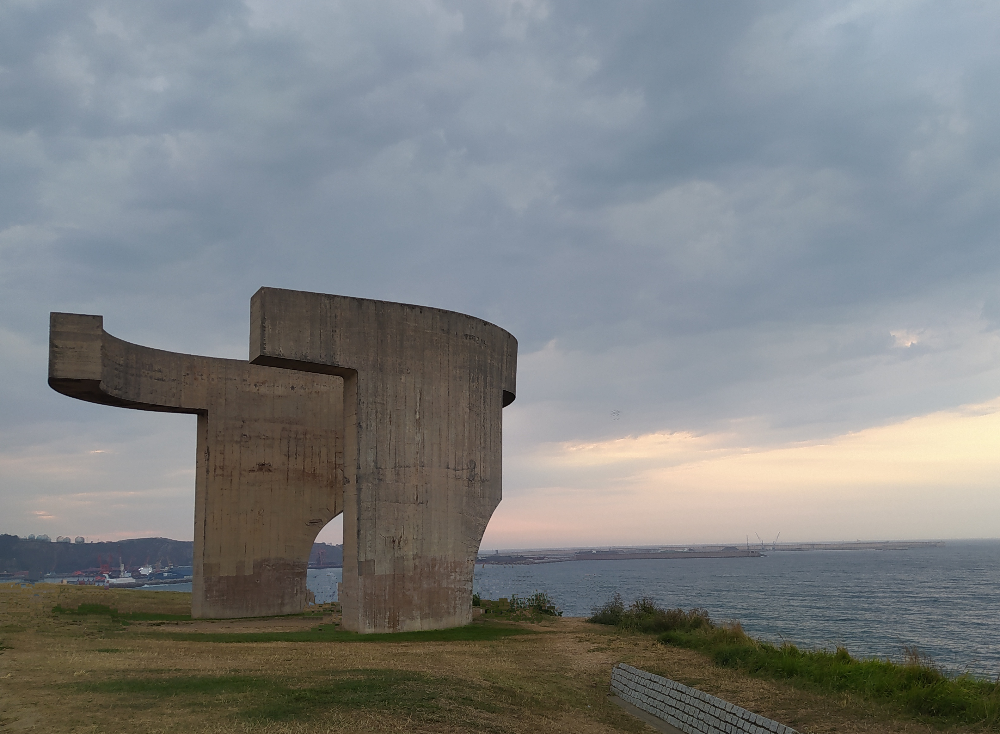
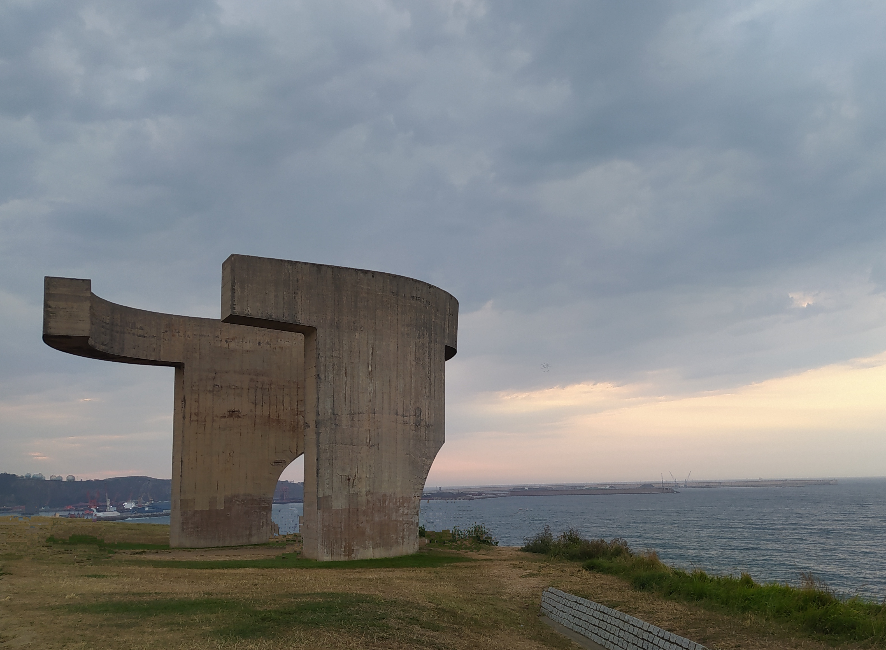
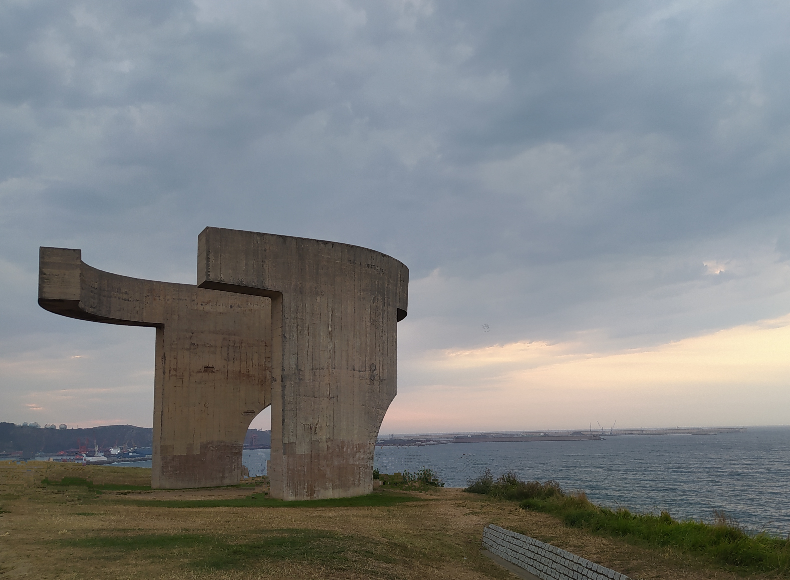

Gijón (en asturiano Xixón) es una ciudad española con la categoría histórica de villa. Es el único núcleo de población de la parroquia del mismo nombre. Su concejo —denominación que reciben los municipios en el Principado de Asturias es el más poblado de la comunidad autónoma, con 267 706 habitantes en 2022.
Geográficamente, la ciudad y su término municipal se localizan junto a una bahía en la zona central de Asturias, a 28 km de Oviedo y 26 km de Avilés. Allí forman parte de una gran área metropolitana que abarca veinte concejos de la región. Esta área, vertebrada por una densa red de carreteras y ferrocarriles, contaba con una población de 835 053 habitantes en 2011, los cuales la convierten en la séptima de España. En la península ibérica, la villa y el concejo se sitúan en la parte central de la cornisa cantábrica y, a escala europea, en la zona sur del Arco Atlántico.
Desde su fundación en época romana, el desarrollo del núcleo urbano ha estado vinculado al de su puerto, que actualmente es líder en movimientos de graneles sólidos en España. Hasta fechas recientes, Gijón tuvo un carácter eminentemente industrial, lo que favoreció su gran crecimiento de los siglos xix y xx. No obstante, durante las últimas décadas, la crisis de la siderurgia y el sector naval han llevado a la reconversión de su tejido productivo, transformando la ciudad en un centro turístico, universitario, comercial y de I+D+i. Así, además de contar con una red municipal de museos, alberga la Milla del Conocimiento Margarita Salas. Esta comprende el complejo cultural de la Universidad Laboral, un campus universitario y un parque científico y tecnológico.

La ciudad es conocida por antonomasia como «capital de la Costa Verde» y es asimismo capital de la provincia marítima de Gijón. Por el concejo discurre el Camino de Santiago en su ruta costera y en él tienen su sede el Consejo Consultivo del Principado de Asturias, la Radiotelevisión del Principado de Asturias y el Centro de Seguridad Marítima Integral de Salvamento Marítimo.
Los más antiguos testimonios de presencia del hombre en lo que hoy conocemos como concejo de Gijón datan del Mesolítico y consisten en instrumentos de piedra llamados «picos asturienses», hallados en la desembocadura del río Piles y en Tremañes. Estas herramientas permitían arrancar de las rocas moluscos como las lapas, los cuales formaban parte de la dieta de los primeros habitantes de la zona.
Más adelante, en el Neolítico, se construyeron en el Monte Deva una serie de túmulos (primitivos enterramientos) y en el Monte Areo un conjunto dolménico considerado como uno de los más importantes de la costa Cantábrica. En 1990, unas prospecciones arqueológicas permitieron sacar a la luz 30 dólmenes, repartidos en dos sectores diferentes: Los Llanos y Les Huelgues de San Pablo, que según algunos expertos están agrupados en un «cierto orden monumental». Sucesivas campañas arqueológicas han permitido el estudio de un túmulo en el área de San Pablo y otros dos en la zona de Los Llanos. De tipología diferenciada, dos de ellos presentan cámaras de planta rectangular y otro, trapezoidal con un pequeño corredor precediéndolo. Este último es un caso interesante, ya que no es frecuente encontrar dólmenes de corredor en el área del Cantábrico. Este conjunto dolménico está datado en el 5000 a. C. Estos monumentos megalíticos indicarían que en el actual concejo gijonés existía una importante población fija, que tenía como objetivo la demarcación del territorio que cada uno consideraba propio.
Volver al inicioGijón está situado en el centro de la costa cantábrica del Principado de Asturias, España, en el suroeste de Europa, al norte de la península ibérica, sobre una rasa litoral en las estribaciones de la cordillera Cantábrica. Forma parte de la vertiente hidrográfica cantábrica y se sitúa en su punto más alto (Pico Cima) a 737 m s. n. m.. El punto más alto de la zona urbana (Ceares) se sitúa a 59 m s. n. m.. El término municipal de Gijón tiene una superficie de 182,1 km² y una forma vagamente rectangular. La ciudad, que ocupa una superficie aproximada de 13,9 km², está situada en el tramo costero central del concejo, en una bahía dividida por el Cerro de Santa Catalina (Cimadevilla) que separa la playa de San Lorenzo al este, del Puerto Deportivo, playas de Poniente y Arbeyal, astilleros y puerto de El Musel, al oeste.
El término municipal de Gijón limita con los siguientes concejos: Carreño al noroeste, Corvera al oeste, Llanera al suroeste, Siero al sur y Villaviciosa al este. Con Sariego sus límites llegan a unirse en un pequeño punto correspondiente a la Peña de los Cuatro Jueces, así llamada por constituir la confluencia de los concejos de Gijón, Villaviciosa, Sariego y Siero.
Volver al inicioEl clima de Gijón, determinado por la presencia del mar y la baja altitud del concejo, es un clima oceánico, con abundantes precipitaciones desde el otoño hasta los primeros días de la primavera, y un tiempo más estable y cálido en verano. Según los datos ofrecidos por la Agencia Estatal de Meteorología para la estación meteorológica de Gijón (período 1971-2000), la media del mes más frío (enero) fue de 8,9 °C, la media del mes más cálido (agosto) fue de 19,7 °C y la temperatura media anual es de 13,8 °C (media anual de máximas: 17,6 °C; media anual de mínimas: 9 °C). La nieve cubre ocasionalmente en el invierno los montes del concejo que rodean la ciudad y llega de forma esporádica al centro de la ciudad, con una media de un día de nieve anual.
La precipitación media anual es de 920 l/m². Ello se debe al denominado efecto de ladera, según el cual las lluvias más intensas se localizan en las zonas más altas y las mínimas en zonas costeras del centro y el occidente. Coincidiendo con la época de menos lluvias se dan situaciones de aridez y sequía (el 11 % de los meses hay aridez y el 9 % el déficit hídrico es grave).
Los vientos son esporádicos y estacionales. En invierno soplan preferentemente del sureste, templados y cálidos, a causa de la retirada hacia el sur del anticiclón de las Azores, con lo que las borrascas atlánticas siguen una trayectoria más meridional. En verano la situación se invierte, predominando vientos del nordeste, fríos y secos.
Volver al inicio| Parámetros climáticos promedio de Gijón | |||||||||||||
|---|---|---|---|---|---|---|---|---|---|---|---|---|---|
| Mes | Ene. | Feb. | Mar. | Abr. | May. | Jun. | Jul. | Ago. | Sep. | Oct. | Nov. | Dic. | Anual |
| Temp. máx. abs. (°C) | 23.6 | 23 | 27 | 28 | 31.8 | 36.4 | 31.4 | 30 | 34.6 | 30.4 | 26.1 | 25 | 36.4 |
| Temp. máx. media (°C) | 13.1 | 13.8 | 14.9 | 15.6 | 17.8 | 20.2 | 22.4 | 23.2 | 21.8 | 19.0 | 15.6 | 14.0 | 17.6 |
| Temp. media (°C) | 8.9 | 9.6 | 10.7 | 11.8 | 14.3 | 16.9 | 19.2 | 19.7 | 17.9 | 15.0 | 11.6 | 9.9 | 13.8 |
| Temp. mín. media (°C) | 4.7 | 5.4 | 6.6 | 8.1 | 10.9 | 13.6 | 16.0 | 16.2 | 14.1 | 11.0 | 7.6 | 5.8 | 10.0 |
| Temp. mín. abs. (°C) | -9.6 | -6.0 | -3.0 | -1.4 | 2.2 | 5.8 | 5.6 | 5.2 | 4.7 | 2.6 | -3.4 | -6.8 | -9.6 |
| Precipitación total (mm) | 94 | 85 | 74 | 93 | 79 | 47 | 45 | 54 | 70 | 104 | 120 | 104 | 971 |
| Días de precipitaciones (≥ 1 mm) | 12 | 11 | 10 | 12 | 11 | 7 | 6 | 7 | 8 | 11 | 12 | 12 | 121 |
| Horas de sol | 103 | 109 | 137 | 151 | 167 | 180 | 194 | 190 | 158 | 132 | 106 | 92 | 1721 |
| Fuente: Agencia Estatal de Meteorología | |||||||||||||